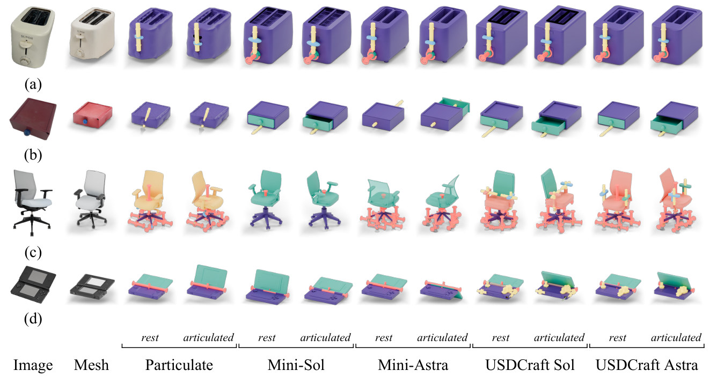
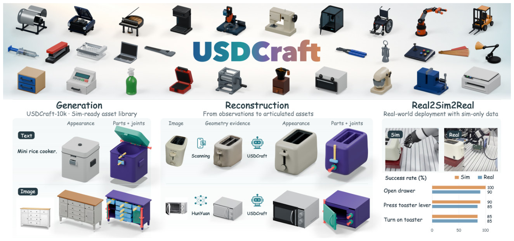
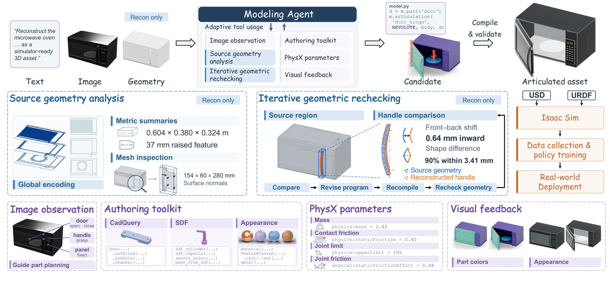
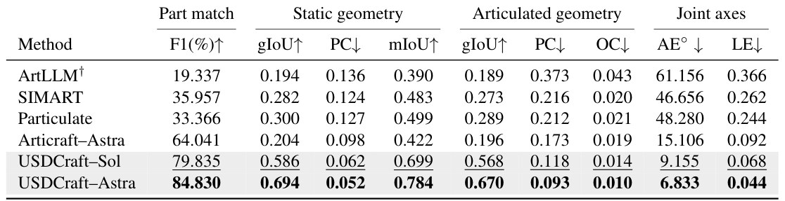
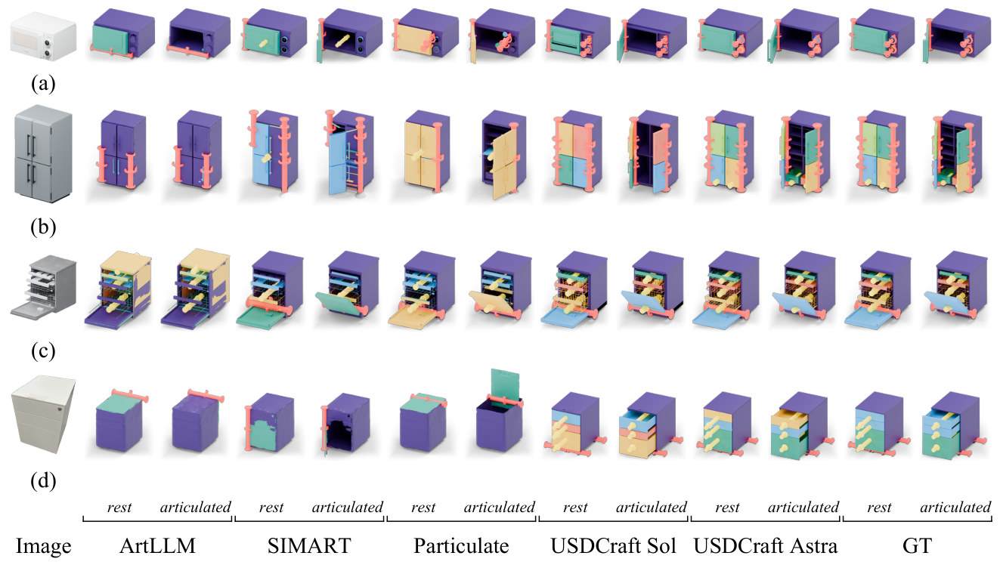
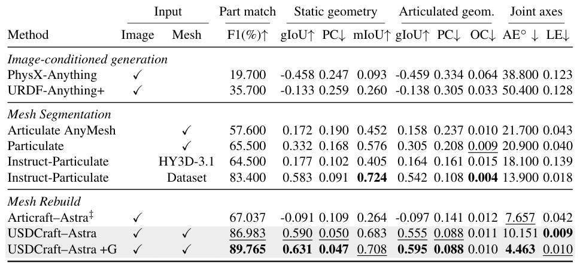
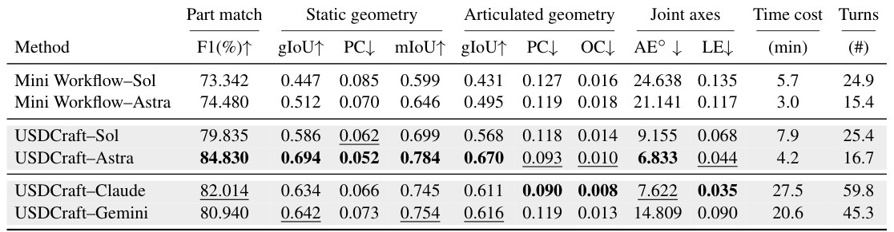
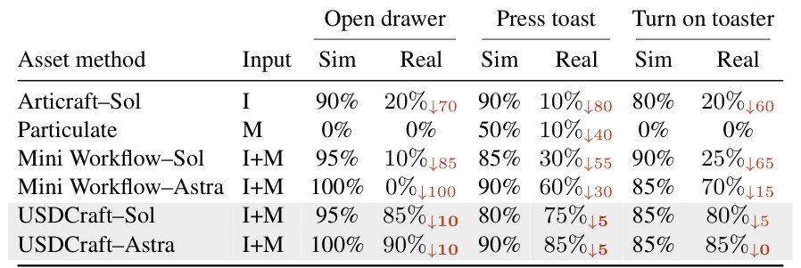
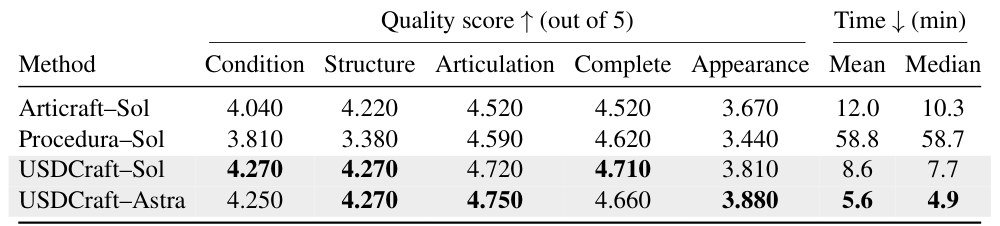
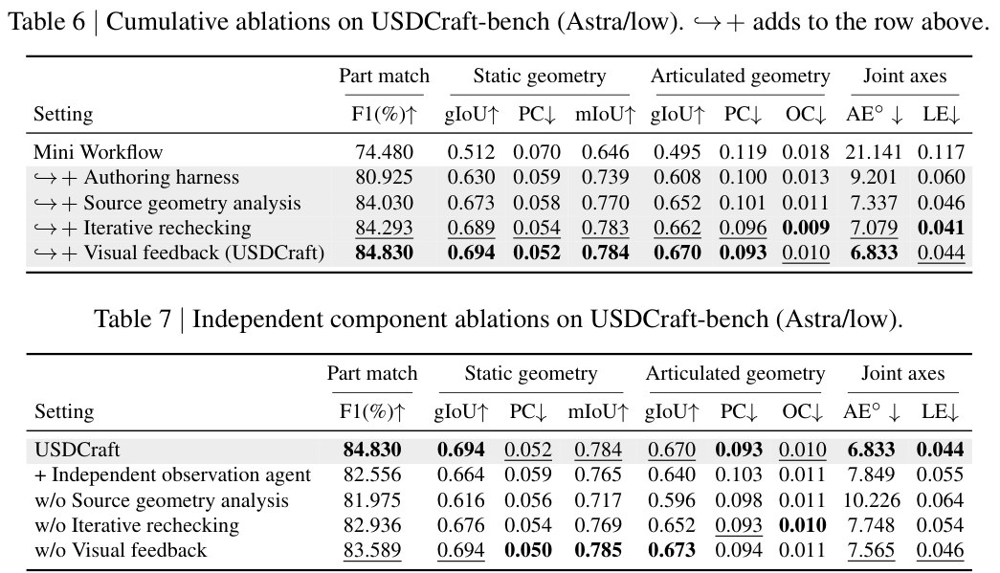

Agent-centric-real-to-sim · 归档于 2026-11-16
USDCraft
USDCraft: Geometrically Grounded Programmatic Modeling of Articulated 3D Assets for Simulation
arXivPDF Project pageCodeDataset
归档到 Agent-centric real-to-sim：agent 把真实物体的扫描 + 一张照片重建成 Isaac Sim 直接能加载的铰接 USD 资产，并用 real-to-sim-to-real 验证。
TL;DR
- Problem
- 扫描 mesh 不全、零件粘连：切分法只能切已有表面，缺的补不上；只看照片写程序的方法尺寸不准，sim 里练的策略到真机按错位置。
- Idea
- 把 mesh 编成 LLM 能读的公制切片文本（观测到的表面和 unknown 分开），让现成 LLM 写可编译的 USD 资产程序；每改一版都在同一网格上复查：漏掉观测表面必改，unknown 里多出的再看照片判断。
- Result
- USDCraft-bench 部件 F1 84.830（Articraft 64.041、Particulate 33.366，Table 1）；扫描 toaster 上只用 sim 数据训练的策略，真机压 lever 85%，比 sim 只掉 5 点（Articraft 掉 80 点，Table 4）。
Problem
扫描不全、零件粘连：切分法补不上，只看照片的程序量不准
Running example · 后面每个 stage 都跟着它走
扫描的真实 toaster（§4.4、App. E）：输入是 iPhone Pro 用 LiDAR + RGB 扫了约 2 分钟的 mesh（0.1435 × 0.2527 × 0.1682 m，App. G.6；Fig. 9 里 slot 很浅，lever 和 knob 只是外壳上的鼓包）+ 一张照片 → 想要：一个直接放进 Isaac Sim 的铰接 USD，lever 能压下（prismatic）、knob 能转（revolute），位置和尺寸跟真机一致，让只用 sim 数据训练的 Diffusion Policy 在真机上把 lever 压下 ≥ 4 cm、把 switch 转过 5° 以上。
flowchart LR IN["toaster 扫描 + 照片
iPhone LiDAR，约 2 分钟"]:::example IN --> P1["切分扫描表面
Particulate"] P1 --> PX["knob 分不出，机身站不稳
switch 0%，lever 真机 10%"]:::gap IN --> A1["只看照片写程序
Articraft–Sol"] A1 --> AX["lever 尺寸、位置对不上
lever sim 90% → 真机 10%"]:::gap IN --> M1["同一 LLM + 通用工具
Mini Workflow–Sol"] M1 --> MX["自写量测代码，部件放偏
lever 85% → 真机 30%"]:::gap

怎么读这张图
- 列：Image、Mesh 是输入；后面每个方法两张：rest 和 articulated。颜色区分部件，红色旋转符号 = revolute，黄色双箭头 = prismatic（图例同 Fig. 3）。
- (a) toaster，本页的例子：Particulate 只有 lever 的黄色箭头，没有 knob 的红色转轴，机身还是扫描的鼓包外形；Mini-Sol、Mini-Astra 和 USDCraft 都有 lever + knob，差别在尺寸和位置，图上看不出来，要看 Table 4 的真机成功率。
- (b) drawer：Particulate 没有抽屉这个部件；Mini-Astra 张开时青色抽屉出现在盒子后上方（读图所得）。§4.4 说它的把手放错，真机触发危险接触，成功率 0%。
推断的“坏在哪”：Articraft 和 Mini Workflow 在 toaster 上具体哪个零件放偏，论文没有逐个说，依据是 §4.2（Articraft “parts are poorly sized and placed”）和 §4.4（“a handle, lever, or switch that is misplaced or missized in simulation sends the real robot to the wrong location”）。Particulate 一条是 App. E 原文：只恢复了 lever 关节，机身站不稳，在 Isaac Sim 里被固定；drawer 和 switch 没有可用资产，没采示范，记 0%。Articraft 的资产按真实扫描尺寸缩放过（App. E）。
根本问题：LLM 读不了 mesh，所以现有方法要么只切 mesh（缺的补不上、粘的分不开），要么不看 mesh（尺寸靠猜）。 这篇的切入点：把 mesh 编成公制文本（观测到的表面 vs unknown）交给现成 LLM 写程序，每改一版都在同一网格上复查；toaster 上 USDCraft–Astra 真机压 lever 85%，只比 sim 掉 5 点（Table 4）。
Related work
| 相关工作 | 解决什么 | 怎么解决 | 和本文的区别 |
|---|---|---|---|
| 同一问题 · 别的解法 | |||
| Mesh segmentation Particulate、Instruct-Particulate、Articulate AnyMesh | 静态 mesh → 部件 + 关节 | 前两者是在标注资产上训练的 feed-forward 网络；AnyMesh 用 VLM visual prompting，免训练 | 只能切给定的表面：扫描里粘连的 knob 分不开、缺的部件补不上 → 本文用程序重建每个部件（Lightwheel F1：Particulate 65.500，Instruct-Particulate 用原 mesh 83.400，本文 86.983） |
| 3D LLM SIMART、ArtLLM | mesh → 部件分解 + 运动学 | 把 3D token 交给专门训练的 3D 语言模型；ArtLLM 生成 articulation-aware layout 引导部件几何，依赖 P3-SAM 分割 | 要 articulation 专门训练，分布外的类别就弱，ArtLLM 100 例里 28 例分割失败 → 本文用现成 LLM，零训练（USDCraft-bench F1：SIMART 35.957，ArtLLM† 19.337） |
| Image-conditioned generation PhysX-Anything、URDF-Anything+ | 单张照片 → 带关节和物理量的资产 | 学出来的生成模型一次前向生成；URDF-Anything+ 是自回归 diffusion | 一次生成，没有可编辑程序也没有迭代修正，尺寸只能从图猜 → 本文写程序并逐版改（Lightwheel F1 19.700 / 35.700） |
| 相似做法 · 别的问题 | |||
| Agentic programmatic generation（本文所属） Articraft、Procedura | 从文字或照片生成铰接资产 | LLM 写资产程序：Articraft 有 SDK + 受限 harness 回传执行和校验结果；Procedura 用 typed mates 约束摆放，另设 visual critic，每个部件单独调用 | 有程序和反馈循环，但只校验装配合理，不校验和实物尺寸一致 → 本文把扫描编成文本，并在同一网格上复查（重建 F1：Articraft–Astra 64.041，本文 84.830） |
来源：论文 §2 Related Work，§4.2–4.5 的对比和 App. C、E。URDFormer、Articulate-Anything 从资产库取部件拼装，论文认为设定不同，没当 baseline。README 说 USDCraft 的 SDK 以 Articraft 的为起点。未另行检索。
Level 1 · Big picture
现成 LLM 写资产程序：照片定是什么、怎么动，扫描定多大、在哪

怎么读这张图
- 上方一排：USDCraft-10k 里生成的资产（10,000 个，500 多类，§4.5）。
- Generation（左）：文字 “Mini rice cooker.” 或一张照片 → Appearance 和 Parts + joints（部件上色，带关节符号）。没有 mesh。
- Reconstruction（中），上行就是本页的 toaster：Image → Scanning（手机扫描）→ 灰色 mesh → USDCraft → Appearance 和 Parts + joints（黄色 lever、底部带红色转轴的 knob）。下行的 microwave 换成 HunYuan 从照片生成的 mesh；Fig. 2 的 microwave 看起来是同一台。
- Real2Sim2Real（右）：Sim / Real 两张照片是 toaster 叠在红色 drawer 上；柱状图是 USDCraft 的成功率：Open drawer 100 / 90，Press toaster lever 90 / 85，Turn on toaster 85 / 85（橙 = sim，蓝 = 真机；和 Table 4 的 USDCraft–Astra 一致）。
flowchart LR I["Input
toaster 扫描 + 照片"]:::example --> M["现成 LLM 写程序
读公制切片文本"] M --> O["Output
铰接 USD + 物理量"]:::win M --> R["同网格复查
漏掉的表面必改"] R --> M
Level 2 · Stages
5 个 stage，一个 agent 自己定顺序

怎么读这张图（图里是 microwave，不是 toaster：下面的数值论文只对它给出）
- 上排左：三种输入 Text、Image、Geometry；Geometry 标着 Recon only：生成任务没有 mesh。
- Modeling Agent：Adaptive tool usage，一个 agent 自己挑工具和顺序；蓝底的 Source geometry analysis、Iterative geometric rechecking 只在重建时用。
- 上排右：model.py 里
d = m.part('door')、m.articulation('door_hinge', REVOLUTE, body, d)→ Candidate（青色门 + 红色转轴）→ Compile & validate → Articulated asset → USD / URDF → Isaac Sim → Data collection & policy training → Real-world Deployment（橙色 = 下游）。 - 中排左 Source geometry analysis（Stage 2）：Global encoding 是一叠切片；Metric summaries 给出整机 0.604 × 0.380 × 0.324 m 和一个 37 mm raised feature；Mesh inspection 放大一块局部（看起来是把手）：154 × 60 × 280 mm 和 surface normals。
- 中排右 Iterative geometric rechecking（Stage 4）：在源上框出把手区域，Handle comparison 给两个数：Front–back shift 0.64 mm inward（位置几乎没偏），Shape difference 90% within 3.41 mm（形状有差）；底部循环 Compare → Revise program → Recompile → Recheck geometry。
- 下排：Image observation 给出 part plan：door（open · close）、handle（grasp）、panel（fixed）（Stage 1）；Authoring toolkit 是 CadQuery、SDF、Appearance 三类 API；PhysX parameters 四个例值：physics:mass = 2.42、physics:staticFriction = 0.40、physics:upperLimit = 105、angular:staticFrictionEffort = 0.48（Stage 3）；Visual feedback 用 Part colors 和 Appearance 两种渲染（Stage 5）。
flowchart TD S1["1 · Evidence + part plan
lever 下压，knob 旋转"] --> S2["2 · Source geometry analysis
24 层切片，7.9 mm 一格"] S2 --> S3["3 · 写 model.py + 编译
body + lever + knob"] S3 --> S4["4 · Geometric rechecking
D− 必改，D+ 待判"] S3 --> S5["5 · Visual feedback
部件色 vs 照片"] S4 --> S3 S5 --> S3 S3 --> OUT["USD 资产
toaster 进 Isaac Sim"]:::win click S1 href "#stage-1" click S2 href "#stage-2" click S3 href "#stage-3" click S4 href "#stage-4" click S5 href "#stage-5"
点击 stage 展开 Level 3 细节。贯穿全程的单 agent 循环见 Stage all。
Level 3 · Details
每个 stage 的细节
Stage 1 Evidence + part plan 照片 + 扫描 mesh（+ 可选文字）→ 公制 Z-up 坐标 + part plan
- Why：照片说明是什么、有哪些部件、怎么动，扫描说明多大、在哪；这条分工写在 agent 的指令里（§3.1、G.1）。
- 坐标和尺度：源几何放进公制 Z-up 坐标，按声明的单位；看起来被归一化、又没有物理尺度的 mesh，先从照片估一个尺度假设，之后固定不动（A.3）。
- part plan：agent 自己看照片，记下哪些部件、怎么连接、怎么动；扫描里缺的部件也从照片补进计划（§3.1）。没有强制的单独观察步骤（G.1）。
- 别加独立的看图 agent：先让另一个 agent 列部件清单，每项指标都变差（Table 7：F1 84.830 → 82.556）。
- 生成：没有 mesh 的特例，跳过 mesh 工具，只靠文字和/或照片（§3.1）。
flowchart LR P["照片
toaster 正面"]:::example --> PL["part plan
lever 下压，knob 旋转"] S["扫描 mesh
iPhone LiDAR，公制"]:::example --> F["公制 Z-up 坐标
0.1435 × 0.2527
× 0.1682 m"] PL --> A["交给 agent
照片定身份，扫描定尺寸"] F --> A
Running example 在这一步
toaster 扫描来自 iPhone LiDAR，本身就是米制，范围 0.1435 × 0.2527 × 0.1682 m（G.6），所以应该不触发看图估尺度（推断）。照片给出的 part plan：机身固定，lever 上下滑（prismatic），knob 旋转（revolute）。这是从 Fig. 1、Fig. 4 的 Parts + joints 读出来的，论文没有打印这份计划的原文。
Stage 2 Source geometry analysis 扫描 mesh → LLM 能读的公制文本（切片 + 摘要），外加按需量测
- Why：LLM 擅长读文字但读不了 mesh；渲染图丢了公制尺度、看不到内部，原始顶点列表又太长（§3.2）。
- 采样：在共享的公制网格上取表面：沿三个坐标轴打射线，再加顶点和三角形中心，外壳里面看得到的表面也算（A.4）。
- 切片文本：细网格最长边 192 格；文字版是沿 Z 排列的 XY 切片，每片最长边取 32、24、16 格里能塞进文字预算的最细一档，重复的切片只存一次（A.4）。
- unknown 不是空：有表面的格子记 ~（这些格子的集合记作 SM），其余一律记 unknown，不当空也不当实心：扫描的洞不代表那里没东西，闭合外壳里面也不代表是实心（§3.2）。
- 摘要和锚点：附局部公制摘要：边界、凸起、开口、内部构件；自动检测的特征只当量测锚点，它是什么功能由 agent 判断（§3.2）。
- 按需 inspection：agent 根据照片和 part plan 选视角渲染源 mesh（render_source），量选定区域的边界、点分布、表面朝向（measure_mesh、measure_face；§3.2、G.1）。Fig. 2 的 microwave：整机 0.604 × 0.380 × 0.324 m，放大的局部 154 × 60 × 280 mm。
flowchart TD M["扫描 mesh
toaster"]:::example --> G["公制网格采样
最长边 192 格，1.3 mm"] G --> T["切片文本 + 摘要
24 层，每层 20 × 32 字符"] T --> AG["agent 读文本
~ 是表面，. 是 unknown"] AG --> Q["按需 inspection
render_source、measure_mesh"] Q --> AG
AXIAL ENCODING（摘录） frame: world, Z-up, meters; isotropic extent_xyz: 0.1435, 0.2527, 0.1682 fine_grid: dims_xyz=112,192,128 pitch=0.0013 slice_stack: axis=Z dims_xyz=20,32,24 pitch=0.0079 cells: . = unknown, ~ = sampled source surface m: slices 12:13 u: slices 20:21 ....~~~~~~~~~~~..... ......~~~~~~~~~..... ...~~.........~~.... ....~~~.......~~.... ..~~...........~~... ...~~...........~~.. ..~.............~~.. ..~~.............~.. .~~..............~~. ..~...~~~~~.~~~..~~. .~~...............~. ..~..~~..~~~~~~~..~. .~................~. ..~..~~...~~...~..~. .~................~. .~~..~~...~~...~..~. .~................~. .~...~~..~~~...~..~. .~................~. .~...~~...~~...~..~. .~................~. .~~..~~..~~~...~..~. .~................~. .~~..~~..~~~...~..~. .~................~. ..~..~~..~~~...~..~. .~................~. ..~..~~..~~~...~..~. .~................~. ..~..~~..~~~...~..~. .~................~. ..~..~~..~~~..~~..~. .~................~. ..~..~~..~~~..~~..~. .~................~. ..~..~~..~~~..~~..~. .~................~. ..~..~...~~~..~~..~. .~................~. .~~..~...~~~..~~..~. .~................~. .~~..~~~~~~~~~~~.~~. .~................~. .~..........~~~~.~~. .~................~. .~...............~~. .~................~. .~...............~~. .~...............~~. .~~..............~~. .~...............~.. ..~..............~.. .~~..............~.. ..~~............~~.. ..~~............~~.. ...~~...........~... ...~~~.........~~... ...~~~~.......~~~... .....~~~~~~~~~~..... ......~~~~~~~~~..... .................... .................... .................... ....................
Running example 在这一步
toaster 的细网格是 112 × 192 × 128，pitch 0.0013 m（1.3 mm）；文字切片是 20 × 32 × 24，pitch 0.0079 m（7.9 mm），Z 从下往上 24 层。agent 从 m 层读到外壳轮廓，从 u 层读到 slot 的位置。m 层（第 12–13 片）的细网格摘要 s12:13 mz=64:70 xy=4:109,15:192(f=.03;p=4,43 16,22 …) 再给出细网格里的索引范围、采样占比 f 和简化的边界轮廓 p，让 agent 在粗字符图之外定位和定尺寸（G.6）。
Stage 3 写 model.py + 编译 part plan + 量测 → model.py → 候选 USD（PhysX、Newton）+ URDF
- Why：程序把部件、关节、物理量都写成显式参数，查出问题时改几行就行，不用重新生成；程序还能加上扫描从没观测到的部件，切分法做不到（§3.3）。
- Authoring toolkit：CadQuery 参数化实体做尺寸可控的机械件（
box().cutBlind().cskHole().chamfer()）；SDF 解析基元做有机形状和平滑过渡（sdf_cylinder、smooth_union、mesh_from_sdf）；外观在同一个程序里写：PBR 材质、贴图、decal（§3.3、A.2）。 - 关节相对部件定义：按类型、原点、轴、限位，相对它连接的两个部件来写；Mini Workflow 要直接在 USD 坐标里摆关节锚点和轴。这是消融里单项增益最大的一步：AE 21.141° → 9.201°（Table 6）。
- PhysX 参数：直接用引擎自己的量写质量、接触摩擦、关节限位、关节摩擦、drive，省掉从通用物理量换算的一步（§3.3）。
- 取值依据：authoring guidance，是另一轮迭代里从 Isaac Sim 测试结果提炼的：手动机构保持 passive，沿正常使用的动作序列检查关节间隙；量不到的物理量作为 modeling assumption 写在代码里（§3.3、A.2、G.1）。Fig. 2 的 microwave：mass 2.42、staticFriction 0.40、upperLimit 105、staticFrictionEffort 0.48。
- 编译（host 做）：重新生成几何、关节和物理量，推出 collision geometry，导出 PhysX 和 Newton 两个 USD 入口 + URDF，并检查导出完整、能打开（A.1、A.2）。根节点是浮动的，固定与否交给场景（G.1）。
flowchart TD IN["part plan + 量测
lever、knob、外形尺寸"]:::example --> C["CadQuery / SDF
机械件 / 有机形状"] IN --> J["部件 + 关节
prismatic、revolute"] IN --> PH["PhysX 参数
质量、摩擦、限位"] C --> MP["model.py
外观也写在里面"] J --> MP PH --> MP MP --> CO["host 编译
USD（PhysX、Newton）
+ URDF"]:::win
Running example 在这一步
toaster 程序里是机身 + lever（prismatic） + knob（revolute）；外观用材质参数复现 toaster 的表面，不复用扫描贴图（App. E）。编出的 USD 直接进 Isaac Sim：压 lever 的任务把它叠在 drawer 上，转 switch 的任务叠在 box 上；两个支撑物也是 USDCraft–Astra 重建的，所有方法共用。支撑高度决定了 lever 和 switch 相对机器人的位置，所以支撑物的尺寸也得对（App. E）。论文没有给 toaster 的质量、摩擦等取值。
Stage 4 Iterative geometric rechecking 候选 + 源编码 → 同一网格上的差异 → 指向几行程序的修改
- Why：Stage 2 只帮第一次构建；写程序时引入的错也得找到，而且反馈要用和源证据同一种表示，才能对回到程序里的某一处（§3.4）。
符号表（Eq. 1、Eq. 2）
| 符号 | 白话 | 例子里的值 |
|---|---|---|
| SM | 源 mesh 里有观测表面的格子 | toaster：G.6 切片里的 ~ 格 |
| St | 第 t 版候选在同一网格上的表面格子 | 论文未报告 |
| rt | 源表面被候选盖住的比例 | 论文未报告 |
| Dt− | 源有、候选没有：确定的错，必须改 | 论文未报告 |
| Dt+ | 候选有、源是 unknown：可能是错，也可能是该补的 | 推断：挖深的 slot 内壁 |
| u、Ω | 投影平面上的一个像素；两边都看得到的像素集合 | — |
| dM(u)、dt(u) | 沿视线看到的第一个表面的深度：源、候选 | — |
| δ(u) | 两者的深度差 | — |
| b | 深度差的中位数 = 部件整体前后挪了多少 | Fig. 2 microwave 把手：0.64 mm（向内） |
| eprofile | 去掉整体平移后，残差的 90% 分位 = 形状差多少 | Fig. 2 microwave 把手：3.41 mm |
原式：rt = |SM ∩ St| / |SM|，Dt− = SM ∖ St，Dt+ = St ∖ SM（Eq. 1）；b = medianu∈Ω δ(u)，eprofile = Q0.9(|δ(u) − b|)（Eq. 2）。
- 重新编码：把第 t 版候选摆在参考姿态，编码到源的网格上，得到它的表面格子（St）；差异出现在 agent 已经读过的切片上，能追回到产生它的那段程序（§3.4）。
- 两种差异分开对待：源有、候选没有（Dt−）是直接的错误证据，要改；候选有、源是 unknown（Dt+）是待定问题，可能是必要的补全（内壁、照片支持的部件、扫描缺的连接），由 agent 用照片和物体功能判断，不统一惩罚（§3.4）。
- 六向深度图：只看覆盖率分不清放错位置还是形状不对；六个轴向的 first-surface 深度图量面的偏移、轮廓差、开口和凸起的位置（§3.4）。
- compare_part：agent 选一块源区域和一个候选部件，沿某个视线比较两边都看得到的像素的深度，不需要 ground-truth 部件分割；整体平移（b）大、形状差（eprofile）小 → 部件放错了，挪；反过来 → 轮廓不对，改形状（§3.4）。
- 循环：每次修改后重新编译、复查受影响的几何：Compare → Revise program → Recompile → Recheck geometry（Fig. 2）。
flowchart TD C["候选 USD
参考姿态"] --> E["编码到源网格
候选的表面格子"] E --> DM["D−：源有、候选无
确定的错，必改"]:::gap E --> DP["D+：候选有、源 unknown
slot 内壁？看照片"] DM --> CP["compare_part
b 平移 vs e_profile 形状"] DP --> CP CP --> ED["改 model.py
重新编译"] ED --> C
Running example 在这一步
论文没有打印 toaster 这一步的数值。Fig. 2 的 microwave 把手：b = 0.64 mm、e_profile = 3.41 mm → 位置对、轮廓要改。套到 toaster（推断）：扫描里 slot 很浅（Fig. 9），程序按照片把 slot 挖深，多出来的内壁落在 unknown 格子里，属于 D+，照片支持它，所以保留；假如 lever 放偏了，扫描里 lever 鼓包所在的格子就会落进 D−，compare_part 报的是大 b、小 eprofile → 挪 lever，而不是重画它。
Stage 5 Visual feedback 候选 → 渲染图（材质 / 部件色，指定关节姿态）→ 缺件、装配、外观、间隙的修改
- Why：几何诊断只比表面，判断不了看起来、用起来像不像；生成任务没有 mesh，这一步是主要检查（§3.5）。
- How：render_candidate 用材质和按部件上色两种方式，在 agent 选的视角、默认或指定的关节姿态下渲染（§3.5、G.1）。
- 找什么：和参考照片或文字要求对比：缺的部件、不合理的装配、外观错误、只在部件动起来才出现的间隙问题，然后改程序（§3.5）。
- 证据：去掉它几何几乎不变（static gIoU 0.694 → 0.694），但 F1 84.830 → 83.589、AE 6.833° → 7.565°（Table 7）：它抓的是缺件和不合理的运动，不是表面误差。
- 边界：静态检查和摆姿态的渲染不能证明动力学仿真会成功（G.1 原话）。
flowchart LR C["候选
lever 压下、knob 转"] --> R["render_candidate
材质 + 部件色"] R --> V["对照参考照片
缺件？间隙？外观？"] V --> C
Running example 在这一步
按 §3.5 的做法，toaster 应在 lever 压下、knob 转动的姿态下渲染部件色视图，对照片检查 lever 槽和 knob 是否齐全、动起来会不会卡（推断：论文没有给 toaster 的渲染记录）。Fig. 4 (a) 里 USDCraft 的结果就是这种部件色视图。
Stage all 一个 agent、一个会话 贯穿 Stage 1–5：agent 自己决定什么时候建、量、改，host 只管编译和机械检查
- 分工：一个 modeling agent 维护 model.py，在同一个会话里选构建、检查、修改动作；host 编译、刷新用于几何检查和渲染的候选、检查导出是否完整；解释差异和决定怎么修由 agent 做（A.1）。
- 起始上下文：任务、实例证据、PhysX authoring guidance、toolkit 基础和一份文档目录；详细 API 和示例按需检索（A.1）。
- 工具（G.1）：measure_mesh / measure_face，render_source，write_model / apply_patch，compile_model / validate_model，check_axial / compare_part，render_candidate。
- 指令要点（G.1）：尽早做出一个粗的可执行候选，再用针对性的查询解决关键不确定；不要为了通过诊断或间隙检查删掉必要的运动；最后报告检查结果、假设、残余差异。
- 花费（Table 3、12）：Astra 平均 4.2 分钟、16.7 轮、$0.8510；Sol 7.9 分钟、25.4 轮、$0.9704。几何证据以文字返回，输入 token 比 Mini Workflow 多（Astra 560.0k vs 128.3k）。
flowchart TD T["起始上下文
任务、证据、guidance"] --> B["先出粗候选
write_model"] B --> K["compile + validate
host 检查导出"] K --> Q["agent 挑检查
check_axial、compare_part"] Q --> P["apply_patch
局部改"] P --> K Q --> F["最终报告
检查、假设、残差"]:::win
Running example 在这一步
论文没有给 toaster 这次运行的轮数和用时；同配置（Astra）在 USDCraft-bench 上平均 4.2 分钟、16.7 轮（Table 3）。
Recap：例子覆盖了论文的哪些 idea
| 论文里的 idea | 例子里在哪体现 |
|---|---|
| 重建 = 以部分几何为依据的程序建模，现成 LLM，不训练 | Big picture：toaster 扫描 + 照片 → model.py → USD |
| 照片定身份和运动，mesh 定尺寸和位置 | Stage 1：lever 下压、knob 旋转来自照片；尺寸来自扫描 |
| 公制 Z-up；没有尺度时看图估 | Stage 1：LiDAR 扫描本身是米制（推断不需要估） |
| Source geometry analysis：切片文本，unknown ≠ 空 | Stage 2：G.6 的 m、u 两层，u 层出现两个 slot |
| 按需 mesh inspection | Stage 2：render_source、measure_mesh（toaster 的调用记录论文没给） |
| 程序表示：CadQuery + SDF + 外观 | Stage 3：机身、lever、knob；材质复现 toaster 表面 |
| 关节相对部件定义（authoring harness） | Stage 3：lever 的 prismatic、knob 的 revolute；Table 6 单项增益最大 |
| PhysX 参数 + 从 Isaac Sim 测试提炼的 guidance | Stage 3：值只有 Fig. 2 microwave 的（mass 2.42 等） |
| 编译成 USD（PhysX、Newton）+ URDF | Stage 3：toaster 叠在 drawer / box 上进 Isaac Sim |
| 同网格复查：D−、D+、b、e_profile | Stage 4：slot 内壁属于 D+（推断）；microwave 把手 0.64 / 3.41 mm |
| Visual feedback | Stage 5：lever 压下、knob 转动的部件色渲染 |
| 单 agent 自定顺序；独立看图 agent 有害 | Stage all；Table 7 |
| sim 数据训练的策略迁到真机 | E4：lever 90% → 85%，switch 85% → 85% |
| 跨模型迁移 | E3：Claude Opus 5、Gemini 3.8 Flash |
| 没有 mesh 的生成、USDCraft-10k | toaster 例子覆盖不到：见 E5 和 Fig. 1 左的 Mini rice cooker |
Results
量过的几何让部件和关节都更准，sim 里训练的策略到真机最多掉 10 点
顺序同论文：E1 在自建的 USDCraft-bench 上和切分法、只看照片的程序法比重建 → E2 在公开的 Lightwheel 上和已发表的结果比 → E3 同一 LLM 换成通用工具，看增益来自工具还是模型 → E4 重建的资产能否让 sim 策略上真机 → E5 没有 mesh 的生成 → E6 拆组件。E1–E3、E6 比几何和关节误差，E4 比 sim 和真机成功率，时间只在 E3、E5 报。
E1自建 benchmark 上，部件、几何、关节比切分法和只看图的程序法准吗？§4.2 · Table 1 · Fig. 3


- (d) 三抽屉柜：ArtLLM 和 Particulate 把顶面当翻盖（顶上红色转轴），SIMART 在正面挖出一块当门（张开后是参差的黑洞）；USDCraft 两个版本都分出 3 个抽屉（黄色双箭头），和 GT 一致。
- (b) 四门冰箱：Particulate 左侧上下两扇门是同一块黄色，张开时一起转：粘连的部件分不开；USDCraft–Astra 分出 4 扇门和内部的层架、抽屉，接近 GT。
- 说明什么
- 部件更全、关节误差大幅下降。USDCraft–Astra F1 84.830，对 Articraft–Astra 64.041、SIMART 35.957、Particulate 33.366、ArtLLM† 19.337；AE 6.833°（Articraft 15.106°，其余 46.656–61.156°）；static gIoU 0.694（最好的 baseline 是 Particulate 0.300）。九项指标上两个 USDCraft 都排第一、第二。
- 在故事里
- 主张的直接证据：切分法分不开粘连部件、补不了缺的；Articraft 部件找得多、关节方向也合理，但没有量测，尺寸和位置不准；重建 + 量测两头都占（§4.2）。
- 指标
- F1 = 可动部件匹配的 precision / recall 调和平均（同关节类型，且 static gIoU ≥ 0.25，或质心距离 ≤ 较小部件最长边的 0.6 倍且最长边之比 ≤ 2；带轴的还要轴角误差 ≤ 15°，revolute 轴线距离 ≤ 0.100）；gIoU、mIoU = 部件包围盒重叠；PC = 部件 Chamfer，OC = 整体 Chamfer（每个资产采 100,000 点）；AE = 关节轴夹角，LE = revolute 轴线距离；缺失的关节罚 90° 和 0.5。预测和参考各自居中、缩放到最长边为 1（App. C）。
- 怎么评测
- 100 个物体：60 个 agent 生成（USDCraft、Articraft、Procedura 各 20）+ 40 个 Hunyuan3D 2.1 mesh 和真实扫描；输入都处理成没有部件和关节信息的单一静态 mesh（§4.1、B.1）。
- 参考标注照 SIMART 的流程：P3-SAM 初分割，人工合并成功能部件、标关节（B.1）。
- USDCraft–Astra 是 3 次平均（Table 9：F1 84.83 ± 0.88）；baseline 各跑几次，论文没说。
- ArtLLM 有 28 例 P3-SAM 分割失败、没有输出，只算剩下的 72 例；在同样这 72 例上 SIMART 42.041、Particulate 36.556、USDCraft–Astra 86.524（C.2）。
- 对 USDCraft 有利的一点：20 个参考是它自己生成的。去掉这 20 个，USDCraft–Astra F1 83.854（Articraft 61.021）；去掉全部 60 个 agent 生成的，89.827（Table 10）。
- 归一化去掉了整体尺度误差；改在参考坐标系里评测（保留绝对尺寸），USDCraft–Astra F1 83.303，Articraft–Astra 从 64.041 掉到 37.398（Table 11）。
E2换成公开的 Lightwheel，和已发表的结果比又如何？§4.2 · Table 2

- 说明什么
- 部件匹配、几何重叠、关节位置最好；整体表面误差不如直接切原 mesh 的方法。USDCraft–Astra F1 86.983、LE 0.009，对用原数据集 mesh 的 Instruct-Particulate 83.400、0.018；但 OC 0.011 vs 0.004、mIoU 0.683 vs 0.724：切分法直接复用给定表面，USDCraft 每个部件重画，小偏差会累积。Articraft–Astra 的 AE 更低（7.657° vs 10.151°），但它只匹配到约三分之二的可动部件（recall 66.8% vs 85.0%），关节误差只在匹配上的部件里平均。加 +G 后 F1 89.765、AE 4.463°。
- 在故事里
- 换成人工建模的资产、和别人报过的数字比，结论仍成立；+G 说明用一段文字就能引导部件和关节怎么定义，不用重训（§4.2）。
- 指标
- 沿用 Instruct-Particulate 的 Lightwheel 设定和九项指标（§4.2、C.1）。
- 怎么评测
- Lightwheel：243 个人工建模的铰接物体，14 类（§4.1、B.2）。
- baseline 行应是已发表结果（推断：引言说 “relative to published Lightwheel results”，这些行只有一位有效小数）；Articraft 和 USDCraft 是作者跑的。
- Instruct-Particulate 两行：Dataset = 直接用原数据集 mesh（对它有利）；HY3D-3.1 应是 Hunyuan3D 3.1 生成的 mesh，表里没解释。
- Articraft–Astra‡：预测和参考各自居中、缩放，它没有公制尺度，这样对它有利。
- +G：14 类通用的一段铰接约定文字，没有类别标签和实例标注，每个 case 都给同一段（G.4）。
E3增益来自工具还是模型？同一 LLM 换通用工具，再换 Claude、Gemini§4.3 · Table 3 · Fig. 4

- 说明什么
- 工具比模型重要。同样用 Astra，USDCraft 九项全胜 Mini Workflow：F1 74.480 → 84.830，AE 21.141° → 6.833°，LE 0.117 → 0.044；Sol 版 USDCraft 也每一项都胜过 Mini Workflow–Astra。换 Claude Opus 5（F1 82.014，LE 0.035 全表最好）、Gemini 3.8 Flash（F1 80.940）也几乎每项胜过 Mini Workflow。代价：GPT backbone 每个资产多约一到两分钟（Astra 3.0 → 4.2，Sol 5.7 → 7.9）。
- 在故事里
- 把 harness（source analysis、rechecking、SDK）和 LLM 拆开：差距来自工具，而且 harness 不改就能换模型（§4.3）。Fig. 4（见 Problem）是这组对比的第一轮结果。
- 指标
- 同 E1；另报每个资产的时间（分钟）和轮数。
- 怎么评测
- Mini Workflow：同 backbone、同样的照片 + mesh，prompt 同样要求实测、可仿真的重建（G.2 原文），但只有通用工具（OpenUSD、NumPy、trimesh、Pillow），量测代码要自己在原始 mesh 上写。
- 两个 Astra 配置跑 3 次取均值，标准差远小于差距（Table 9）；其余跑一次。
- token 和费用（Table 12）：USDCraft–Astra 输入 560.0k、$0.8510，Mini–Astra 128.3k、$0.4619；Claude 6,493.0k、$4.5115；Gemini $0.8643。
E4重建的资产能让只用 sim 数据训练的策略上真机吗？§4.4 · App. E · Table 4

- 说明什么
- sim 成功率人人都高，掉多少才看出资产对不对。USDCraft–Astra 真机 drawer 90%、lever 85%、switch 85%，比 sim 只掉 10 / 5 / 0 点；只看照片的 Articraft–Sol 真机 20% / 10% / 20%，掉 70 / 80 / 60 点；Mini Workflow 波动大（Astra 的 drawer 100% → 0%，把手放错导致危险接触）；Particulate 只能做 lever（sim 50%，真机 10%）。
- 在故事里
- 几何准 → 策略学到的抓、压位置在真机上也对：sim 里错位或尺寸不对的 lever 会把真机引到错的位置；Particulate 说明先要结构完整，再谈几何准（§4.4）。
- 指标
- 成功 = drawer 拉开 ≥ 5 cm、lever 压下 ≥ 4 cm、switch 转过 > 5°；因危险接触被叫停的算失败；每个 policy sim 20 次 + 真机 20 次，物体位置和机器人初始姿态随机（App. E）。
- 怎么评测
- 3 个真实物体（drawer、toaster、box）用 iPhone Pro 的 LiDAR + RGB 扫描，每个约 2 分钟；支撑物都用 USDCraft–Astra 重建，所有方法共用（App. E）。
- UR7e + Robotiq 2F-85，一个外部相机；policy 输入 RGB，输出末端绝对位姿；sim 和真机的机器人、桌子、相机标定对齐。
- 每个方法 × 任务：NVIDIA cuMotion 在 sim 里自动采 200 条示范，Diffusion Policy 训练 80 epoch、batch 128，直接上真机，不用真机数据、不微调。
- baseline 资产：Articraft 只给照片，生成后按真实扫描尺寸缩放；Particulate 只给 mesh，机身站不稳、在 Isaac Sim 里固定，它的 50% 是在固定底座下测的。
- 没报：试验间的方差，以及除 Mini–Astra drawer 之外的失败原因。
E5没有 mesh 时，同一套工具生成资产怎么样？§4.5 · Table 5

- 说明什么
- 分数最高、用时最短。每一项最高分都是 USDCraft（Sol 或 Astra）；USDCraft–Astra 平均 5.6 分钟，对 Articraft–Sol 12.0、Procedura–Sol 58.8。差距主要在 Condition（4.270 vs 4.040 / 3.810）和 Appearance（3.880 vs 3.670 / 3.440）。
- 在故事里
- 重建用的 toolkit 也能做生成；用它（USDCraft–Astra，70% 文字、30% 图片请求）生成了 USDCraft-10k：10,000 个资产，500 多类（§4.5）。
- 指标
- 匿名的 Sol/high 评审，每个资产在新上下文里看证据包（请求、部件要求、几何和关节记录、外观视图、每个关节的运动图），按 G.3 的 rubric 给 1–5 整数分（C.3）。
- 怎么评测
- 每种设定 50 个文字请求 + 50 个图片请求。
- 只有模型打分，没有人评；评审用的 Sol 也是 USDCraft–Sol 和两个 baseline 的 backbone。
- Procedura 每个部件单独调用 agent，时间随部件数增长，可能也是它 Structure 低的原因；USDCraft 整个物体写一个程序（§4.5）。
E6哪个组件起作用？§4.6 · Table 6 · Table 7

- 说明什么
- authoring harness 增益最大；source geometry analysis 第二，拿掉它掉得最多。逐个加：F1 74.480 → 80.925（+ harness，AE 21.141° → 9.201°）→ 84.030（+ source analysis）→ 84.293（+ rechecking）→ 84.830（+ visual feedback）。逐个拿掉：无 source analysis F1 81.975、AE 10.226°、static gIoU 0.616，三项都是最大跌幅；无 rechecking F1 82.936；无 visual feedback 几何不变（gIoU 0.694）但 F1 83.589；多一个独立 observation agent，每项都变差（F1 82.556）。
- 在故事里
- 每个组件管一种错：SDK 让关节相对部件定义；量测决定初始规划（后面的复查能改错，但补不出规划需要的尺寸）；复查纠正错位和形状；渲染抓缺件和不合理运动；单独的看图清单反而误导（§4.6）。
- 指标
- 同 E1，USDCraft-bench，Astra / low。
- 怎么评测
- Table 6 从 Mini Workflow 起逐个累加，Table 7 从完整系统逐个拿掉。
- 完整 USDCraft 行就是 Table 1 的 3 次均值；其余各行跑了几次，论文没说。
Limits
局限和开放问题
- 细密网格结构（球拍线、购物车钢丝框）重建不准：整体形状对，线距和连接不对（Fig. 11，App. F）。
- 柔性物体只支持标注的状态和静止几何；弯曲、拉伸、接触响应都没建模，伞面张力和刚柔耦合没在 Isaac Sim 里验证（Fig. 12）。
- 物理参数是按 guidance 写的假设，不是从交互里辨识的；G.1 自己也说静态检查和姿态渲染证明不了动力学仿真会成功。动力学上的验证只有 E4 的三个任务。
- 逐件重画会累积表面小偏差：Lightwheel 上 OC（0.011 vs 0.004）和 mIoU（0.683 vs 0.724）不如直接切原 mesh 的 Instruct-Particulate（Table 2）。
- USDCraft-bench 是作者自建的，100 个里有 20 个参考是 USDCraft 自己生成的；去掉它们仍最好（F1 83.854，Table 10）。
- 生成质量只由 LLM（Sol/high）打分，没有人评（Table 5）。
- 真机实验 3 个物体、每个任务 20 次、一台 UR7e、一个外部相机，没报方差。
- 换 backbone 成本差别大：Claude 每个资产 27.5 分钟、$4.5115，Astra 4.2 分钟、$0.8510（Table 3、12）。
For Agent-centric real-to-sim
对我们有什么用
- 接进 r2s-lite：DROID 场景里的铰接物体（抽屉、柜门、带 lever 的电器）从 twin 的 mesh 里切出来，配一帧照片，跑
uv run usdcraft reconstruction obj.glb --image frame.jpg --meters-per-unit … --up-axis +Z --no-image-observation，把isaac/model.usdc（PhysX 那份）放回场景。显式给尺度，否则像是归一化过的 mesh 会按照片估尺度（A.3）；关掉 image observation，因为开源 CLI 默认开着它（README），而 Table 7 里多这一步每项都变差（F1 84.830 → 82.556）。支撑物也按公制重建：支撑高度决定 lever 相对机器人的位置（App. E）。 - repair loop 用几何差当证据：锅盖那集第 9 次过了宽松规则，场景却是错的。USDCraft 的复查可以直接搬：把 Isaac Sim 里的 twin 编码到源 mesh 的同一网格，观测到却没建出来的格子（D−）不清零就不算完成，多出来的（D+）要有画面依据，b 和 e_profile 区分该挪还是该改形状。E4 也说明 sim 成功率说明不了 twin 对不对：Articraft 的 lever sim 90%，真机 10%。
- real2sim-anything-indoor 和 WorldClaw：视频重建出的房间里，柜子、抽屉、门如果是静态 mesh，正好是 USDCraft 的输入形态（mesh + 一张照片），可以逐件换成铰接 USD；WorldClaw 的白盒场景可以用它的生成模式（Astra 平均 5.6 分钟一个，Table 5）或 USDCraft-10K 的现成资产。但物理参数是按 PhysX 写的，论文只评测了 PhysX 那份（G.2）；放进 Genesis 时用它的 URDF 导出，摩擦和关节参数要重新核对。